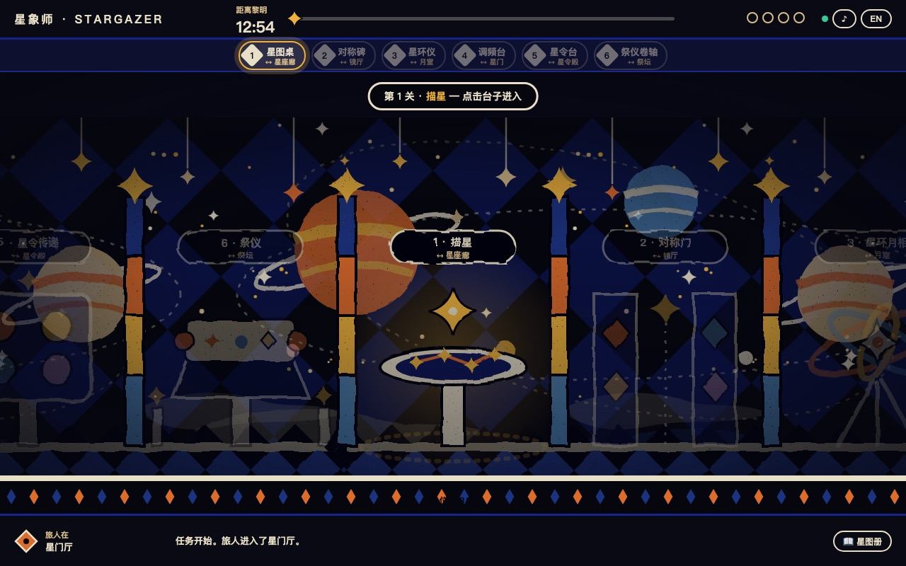
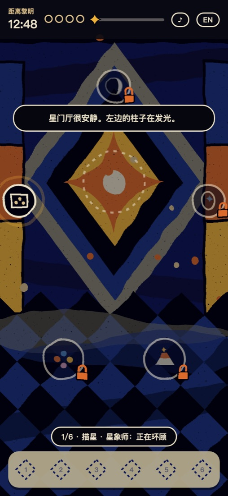

STORY剧情设定Story
很久以前，天空里有一扇门。每个黎明它只开一次，让迷路的星星回家。
今夜，门被封死了。它的两位看守，被隔在门的两侧。
星象师读得懂星图，却看不见门里；旅人看得见一切，却读不懂星图。
只有你们的声音，能穿过这道门。
Long ago, there was a gate in the sky. Once each dawn it opened, to let lost stars find their way home.
Tonight, the gate is sealed. Its two keepers are parted on either side.
The Stargazer reads the stars but cannot see inside; the Wanderer sees everything but cannot read them.
Only your voices can cross the gate.


左：星象师的观星台（可拖拽 360°） 右：旅人的星门厅
Left: the Stargazer’s observatory (drag 360°) · Right: the Wanderer’s gate hall